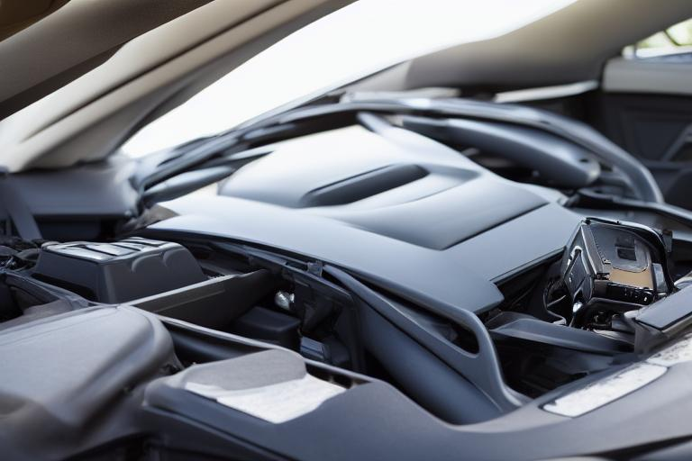

Señales claras de una batería de vehículo débil y cómo testearla tú mismo

Una batería débil suele avisar antes de dejarte sin arrancar. Reconocer las señales y hacer una medición sencilla con un multímetro te ayuda a decidir si basta con cargarla o si conviene cambiarla. Si no te sientes cómodo, pide a un taller que la pruebe.
Señales de una batería débil
- El motor gira lento o con dificultad al arrancar, sobre todo con frío.
- Al girar la llave se oyen chasquidos rápidos y el motor no arranca.
- Las luces se atenúan cuando intentas arrancar.
- Aparece la luz de batería o de fallo eléctrico en el tablero.
- La batería tiene más de tres a cinco años, o hay corrosión, hinchazón o fugas.
Cómo medir el voltaje
Necesitas un multímetro, guantes y gafas de protección. Con el motor apagado y el coche en reposo al menos 30 minutos, selecciona voltios de corriente continua. Toca el borne positivo (rojo, marcado con +) con la punta roja y el borne negativo (negro, marcado con −) con la punta negra.
- Alrededor de 12,6 V o más: la batería está bien cargada.
- Alrededor de 12,4 V: está parcialmente descargada.
- 12,2 V o menos: está muy descargada y conviene recargarla y revisarla.
El voltaje en reposo no mide la capacidad real de arrancar el motor. Muchas tiendas de repuestos y talleres hacen una prueba de carga y revisan el alternador, a menudo gratis o a bajo costo.
Precauciones
- Mantén lejos chispas, llamas y cigarrillos: la batería puede desprender gases inflamables.
- El ácido es corrosivo. Si toca la piel o los ojos, enjuaga con abundante agua y busca atención médica.
- No toques ni intentes cargar una batería agrietada, hinchada o con fugas: haz que la cambie un profesional.
- No uses el multímetro en la escala de resistencia o de corriente sobre los bornes.
Cuándo acudir a un profesional
Si la batería está a menudo descargada, el problema puede estar en el alternador o en un consumo anormal. Un mecánico puede probar la batería y el sistema de carga antes de que cambies una pieza que quizá no sea la culpable. Si el coche no arranca, usa un servicio de asistencia en carretera en lugar de improvisar con cables de arranque si no sabes hacerlo con seguridad.